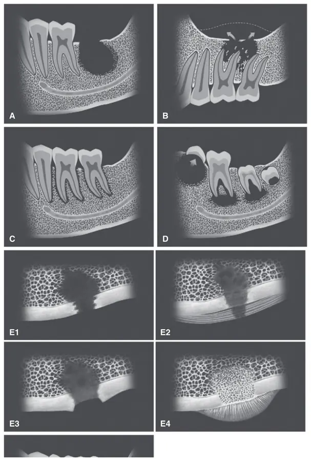
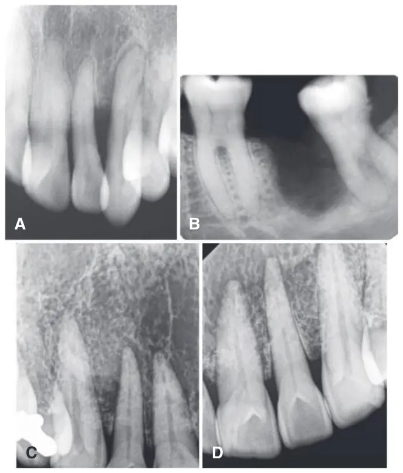

نسخه استخراجشده؛ ترجمه یا تأیید علمی انجام نشده است. وضعیت: captured
یک اصل را همین اول بشنو: «همیشه بهتر است به بدخیمی شک کنی و اشتباه کنی، تا اینکه…» — چون بدخیمی فک نادر است و همین نادری، دندانپزشک را کمتر به فکر آن میاندازد.

و اکنون چارچوب: همان چهار گام تحلیل ضایعه که پیشتر دیدی، این بار روی بدخیمی.
گام ۱ — حاشیه، و علت زیستیاش: «حاشیههای نامشخص یک بدخیمی نتیجهی تخریب تکهتکهی استخوان در محیط ضایعه است.» و بدخیمی «فاقد کورتیکاسیون حاشیهای است که با تودههای خوشخیم کندرشد همراه است و به استخوان فرصت ریمادلینگ میدهد».
و یک ظرافت مهم که تصور سادهانگارانه را میشکند: «برخی کارسینومهای سلول سنگفرشی دهانی که به مندیبل تهاجم میکنند ممکن است حاشیهی واضحتری داشته باشند، بهویژه اگر نئوپلاسم مهاجم سطح بسیار پهنی داشته باشد.» یعنی حاشیهی نسبتاً واضح، بدخیمی را رد نمیکند.
گام ۲ — ساختار داخلی: «بیشتر بدخیمیهایی که در فک یا اطراف آن پدید میآیند استخوان نمیسازند و تشکیل استخوان واکنشی را هم تحریک نمیکنند. در نتیجه، این نئوپلاسمها داخلاً رادیولوسنت هستند.» گاهی جزیرههای باقیماندهی استخوان دیده میشوند و الگوی تخریب لکهلکه در محیط ضایعه میسازند.
و استثنای مهمش: «سارکومهای اولیهی استخوان و نیز متاستازها — بهویژه از پستان یا پروستات — میتوانند تولید استخوان غیرطبیعی را تحریک کنند» و الگوی اوپک نامنظم و بیسازمان و لکهلکه بسازند.
گام ۳ — اثر بر ساختارهای مجاور: «بدخیمی یک فرایند تخریبی است و اثرش بر ساختارهای اطراف همین رفتار را آینه میکند.» چهار ساختاری که تخریب میشوند: الگوی ترابکولار طبیعی، کورتکسهای بیرونی استخوان، کف حفرههای هوایی و کورتکس کانال، و کورتکس فولیکول تاج دندانهای در حال تکامل.
و یکی از پرارزشترین نشانههای این یونیت: بدخیمی میتواند به فضای لیگامان پریودنتال تهاجم کند و آن را بهصورت غیرهممرکز (nonconcentric) پهن کند، همراه با تخریب لامینا دورا. این پدیده گاهی «نشانهی گرینگتون» (Garrington sign) نامیده میشود.
معمولاً وقتی نئوپلاسم کورتکس بیرونی را تخریب کرده، هیچ واکنش پریوستئالی رخ نمیدهد — چون فرصتی برای واکنش نمانده است.

ولی استثنایش، یکی از چشمگیرترین نشانههای رادیولوژی است: «برخی نئوپلاسمهای بدخیم چنان سریع رشد میکنند که وقتی به سطح استخوان میرسند، میتوانند سلولهای پریوست را تحریک کنند تا استئوئید را در امتداد الیاف شارپی و عروق خونی رسوب دهند.» و چون این الیاف و عروق عمود بر سطح استخواناند، نتیجه «الگویی از خطوط رادیولوسنت و رادیواوپک متناوب است که با زاویهی ۹۰ درجه از سطح استخوان بیرون میزنند».
و بسته به شدت مینرالیزاسیون، دو نام میگیرد: «مو روی سر» (hair-on-end) و «سانبرست» (sunburst).
و چهار الگوی ممکن روی کورتکس:
و اثر بر دندان — نشانهی «دندان شناور»: «نئوپلاسمهای بدخیم سریعالرشد معمولاً استخوان نگهدارنده و ساختارهای پیرامون دندان را تخریب میکنند، بهطوریکه دندانها به نظر میرسند در فضا شناورند.»
و یک قاعدهی منفی که بهاندازهی قاعدههای مثبت ارزش دارد: «خودِ دندانها معمولاً از بدخیمی تأثیر نمیپذیرند، جز در شمار اندکی از موارد که تحلیل ریشه رخ میدهد» — و سه بدخیمی بیش از بقیه آن را میسازند: مولتیپل میلوما، کندروسارکوم و استئوسارکوم. یعنی نبودِ تحلیل ریشه در ضایعهای تهاجمی، خودش یک داده است.
و نشانهی «گاز بیسکویت» (cookie bite): وقتی کارسینوم سطحی از هر جهتی به استخوان تهاجم میکند، رادیولوسنسیای میسازد که «در سطح استخوان پایهی پهنتری دارد» — و این الگو را با گازی که از یک بیسکویت گرفته شده تشبیه میکنند.